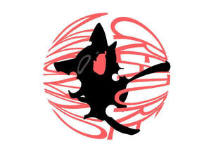
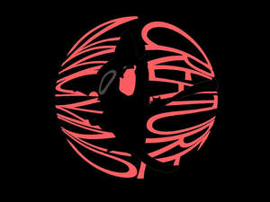

Trade Mark Journal No.2025/016 18 April 2025
UK00004184919 6 April 2025 (16,24,41,42)
Mark 1

Mark 2

- Class 16
- Graphic art reproductions; Graphic art prints; Printed art reproductions; Art prints; Art pictures; Graphic art books; Art etchings; Graphic reproductions; Reproductions (Graphic -); Graphic drawings; Reproductions of paintings; Paintings [pictures], framed or unframed; Graphic prints; Fine art prints; Paintings; Watercolor paintings; Decoration and art materials and media; Art paper; Graphic prints and representations; Works of art of paper; Watercolors [paintings]; Lithographic works of art; Cartoon prints; Watercolour paintings; Printed visuals; Works of art and figurines of paper and cardboard, and architects' models; Paintings and calligraphic works; Painting books; Photographic or art mounts; Watercolours [finished paintings]; Painting sets for artists; Watercolours [paintings]; Watercolor pictures; Photographs [printed]; Printed photographs; Drawings; Photo prints; 3D wall art made of card; 3D wall art made of paper; Prints in the nature of pictures; Photograph album pages; Engravings [prints]; Prints [engravings]; Works of art made of paper; Collages; Canvas panels for artists; Papers for painting and calligraphy; Pictorial prints; Art mounts; Canvas prints; Materials for artists; Photograph albums; Poster books; Watercolor [watercolour] saucers for artists; Canvas for painting; Painting canvas; Printed music books; Painting pencils.
- Class 24
- Mural hangings [textile].
- Class 41
- Rental of artwork; Mural art painting services; Gallery services (Art -); Art gallery services; Art exhibitions; Art exhibition services; Rental of paintings and calligraphic works; Portrait painting.
- Class 42
- Design of artwork; Graphic art design; Design services relating to artwork; Art work design; Design services for art-work; Graphic art services; Design of sculptures; Industrial and graphic art design; Commercial art design; Graphic illustration design; Graphic design of promotional materials; Graphic illustration design services; Industrial art design; Graphic arts design; Design (Graphic arts -); Design of logos for t-shirts; Design of audio-visual creative works; Graphic design; Design of post card cartoon characters; Design of printed material; Authenticating works of art; Works of art (Authenticating -); Packaging designs.
Yangyang Xu
Unknown Creatures Art Studio Limited